All content © 2016 Eduardo Chamorro (except where otherwise noted) Some rights reserved.
All content © 2016 Eduardo Chamorro (except where otherwise noted) Some rights reserved.Licensed under a Creative Commons Attribution-NonCommercial-ShareAlike 3.0 Unported License
Making flexible PCB is more easy than most of people may think, it is usefull in some kind of application as wereables, or flexible and small mechanism where the pcb has to be embedded.
We can even make them with a modest vinyl cutter as Silhoutte Cameo (aprox 200$)the one we have in Fab Lab Seoul.
The circuits that you can cut on the Roland are limited by the width of the pen knife. As a rule of thumb, anything that you can cut with a lot of time and effort with an x-acto can be cut by the Roland, but if there are things that are too small for that they will probably also be too small for the vinyl cutter.
We will need:
3M 1126 conductive adhesive tape
Flexible Support,we used a thin PVC sheet
Electronic components for your board
Kapton Tape is not obligatory but highly recommended,as it will protect your Pvc sheet from overheating while your solder the electronic components.
If you don't use it we recommend to set a high temperature on your solder iron a solder all the components fast by heating a short time in each pad.(Be carefull to don't melt the support material or you components as you will waste your board)
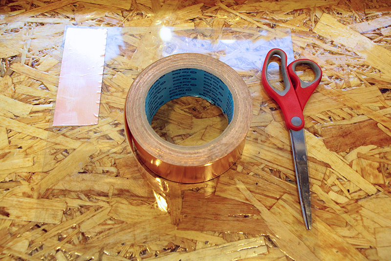
Load the material in the vinylcutter, be sure to put the release lever down to help you loading the material and remember to put it up to lock it thight.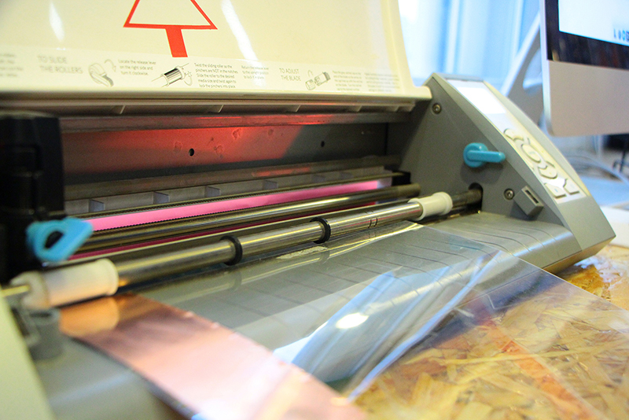
For loading the material follow the instructions on the machine screen.We sure that the white rollers grip the material.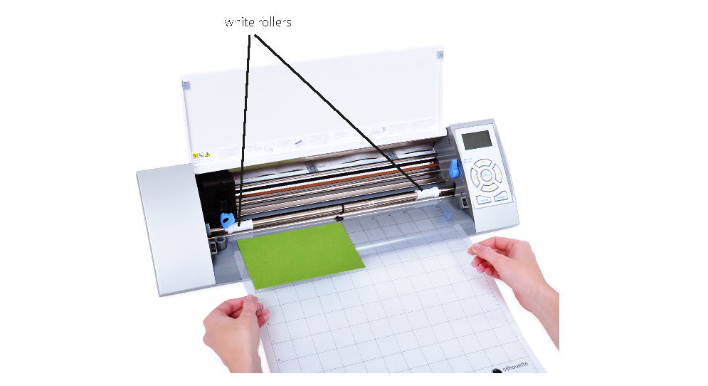
This tutorial uses Inkscape to prepare files for the vinyl cutter.
In our case we are going to use the main machine software Silhoutte Studio for all the steps as we found this method shorter in steps and with similar results.
First thing to check is our board dimensions the be sure the traces are on scale.For that you can use any raster program, our choice was to use fabmodules as it also shows the dimensions and pixel density of our PNG 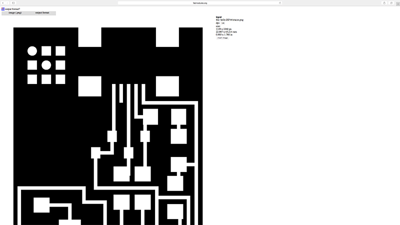
In this case we where making the FabISP SMDCrystal type. It dimensions as we can see are : 22.98x45.21mm
We open the traces PNG with Silhoutte Studio and check the PNG size. If it doesn't keep the correct dimensions,we have to scale it,to change it use (SCALE/MOVE on the up right menu)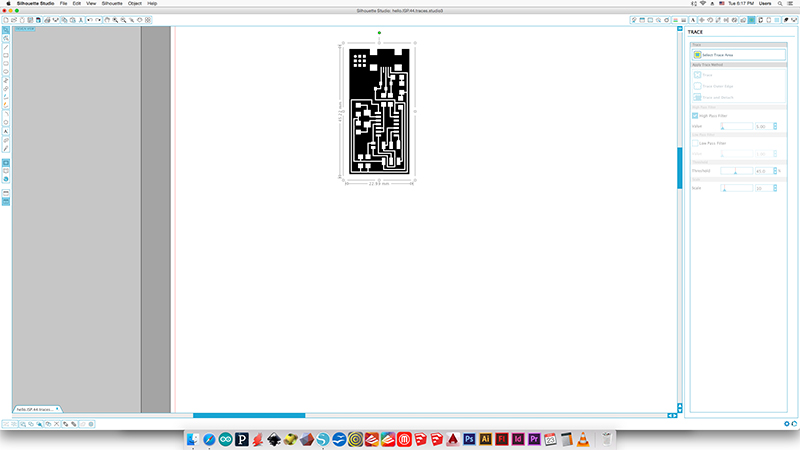
For the vinylcutter you only need one contour so after checking the correct scale we can transform the PNG in to a vector path so the machine can cut it properly.
Click the TRACE button (up right menu)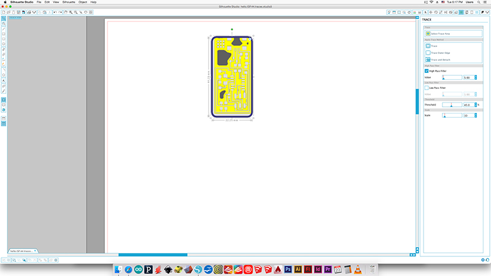
Select the area to TRACE in this case we want to cut the whole board so select it all, nothing happends if you select more space as we are going to transform the PNG by color contrast white/black of the own PNG.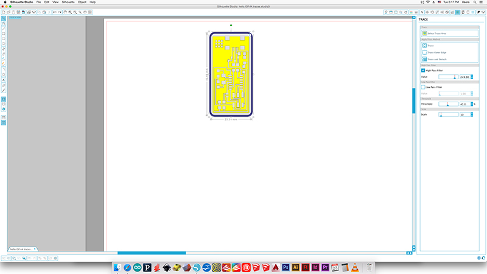
Move the sliders on the right (HIGH/LOW PASS FILTER) until the board is correctly defined.
You should get something like this. 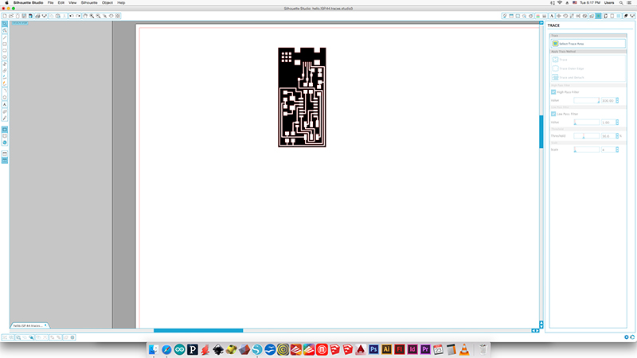
Right now the paths are on the top of your PNG image, so we click on it to select it and move it.Like this.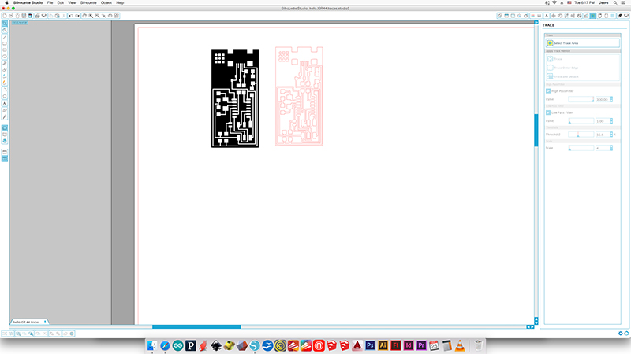
NOW IS VERY IMPORTANT TO CHECK THAT ALL THE TRACES ARE CONNECTED CORRECTLY BY VISUAL MAKING THE COMPARISON WITH BETWEEN BOTH.If everything is fine we can erase now the PNG.
Move the board to the top left corner so the PCB will be cutted next to the origin point of your Vinycutter.
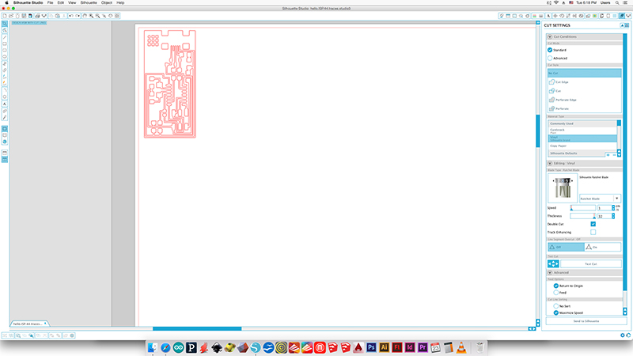
You want enough force in your circuit to cut through the copper, but not through the backing. If you use too much force, the traces will also be dragged up with the cutting.
In the Silhoutte Cameo case we have to adjust the vale force via hardware and software.
How to do it?Open the Vinyl front door and pick up the blade by opening the looking mechanism.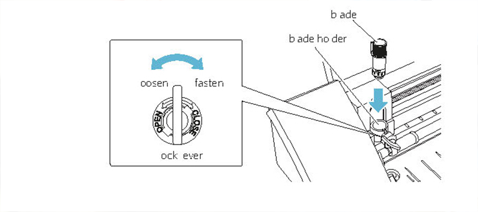
To adjust the force you have to rotate the blade setting the number from 1 to 10 (low to maximum force)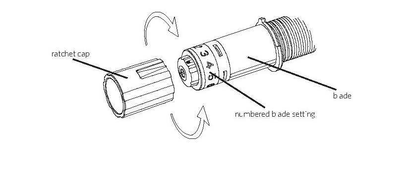
We find out that the best values in our case where: VINYL MATERIAL with custom settings FORCE 6-8 THICKNESS 27-30 SPEED 1 cm/s Double Cut Line segment overcut: off
There is a test cut on the menu so you can make different material/force trials.
Check the correct connection between the programm and the machine and send the file.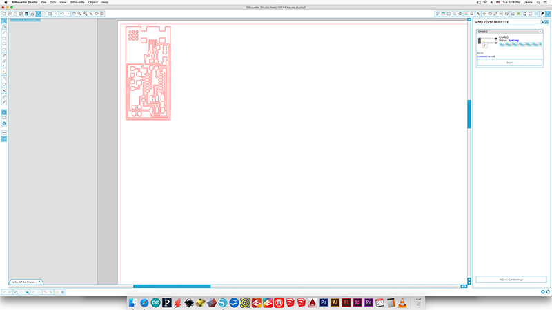
After a few shots you should get something like this.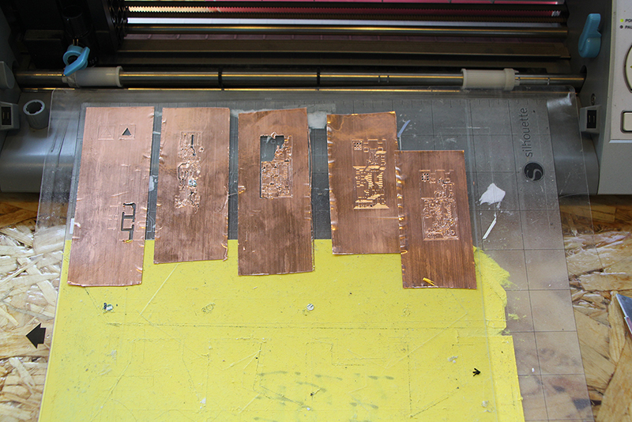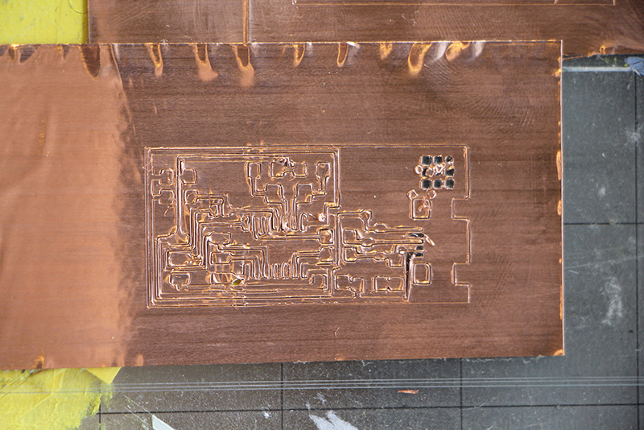
It is time to separe the cutting mat and the PVC sheet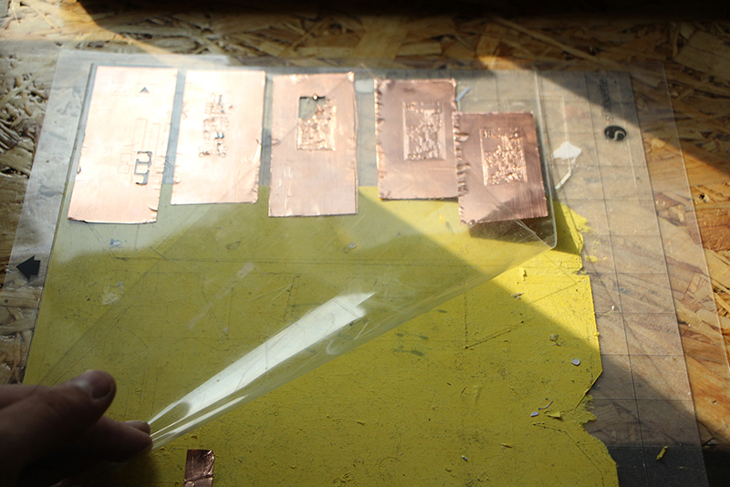
Cut the PVC around your board,remember to let enought space on the side so you can work with it easier.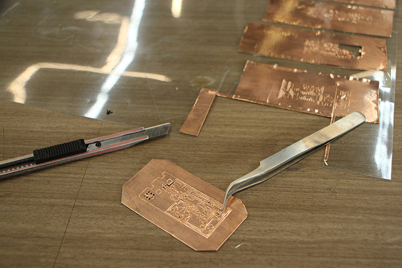
With the help how a cutter knife and a good pair of tweezers put slowly out all the excess of copper.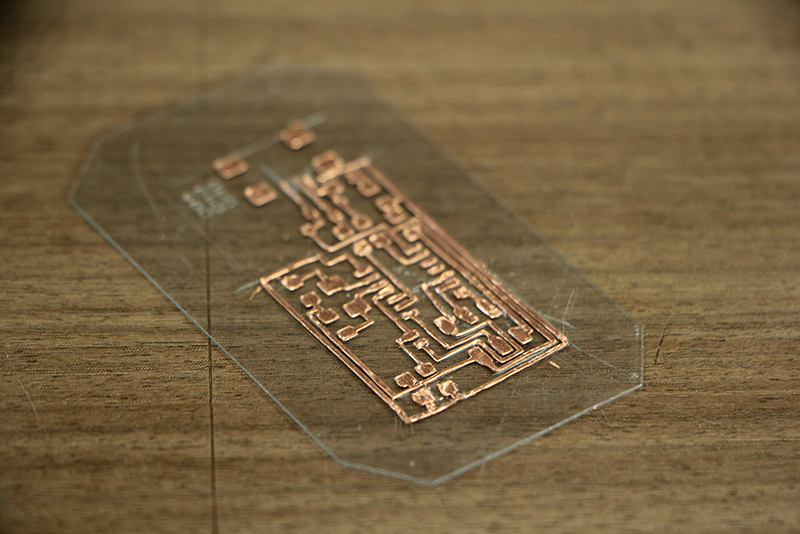Clean completely the board and time to bend!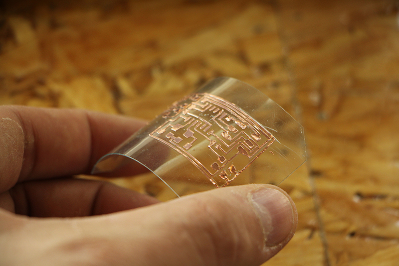
Soldering is the same as soldering on any other PCB. However, while soldering you might find that some of your traces are looser than need be. Fix these by adding extra pressure to the trace.
Solder tips If you find out some "moving traces" make extra pressure on them to glue them correctly Use a higher soldering temperature than usual but spend less time on each pad. BE FAST! Let the material cooldown so you don't melt the PVC base. Use hot glue around the connectors to avoid breaking them while unpluging
Enjoy your flexible board!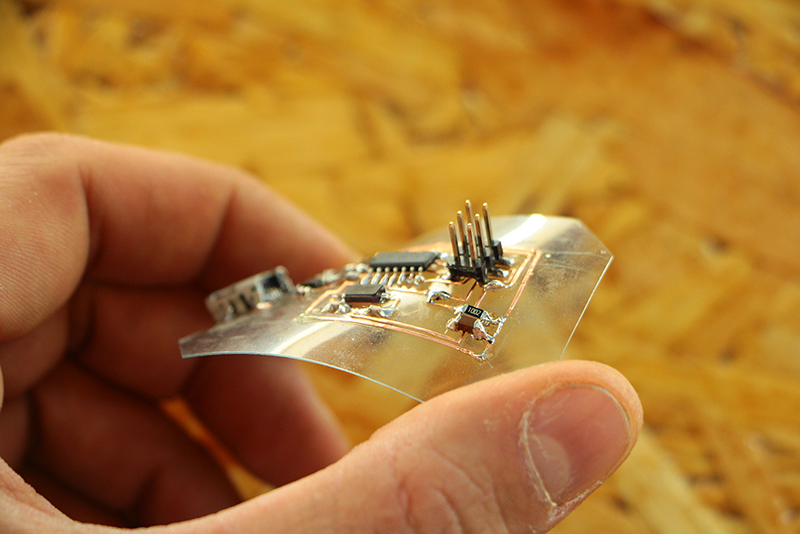
All content © 2016 Eduardo Chamorro (except where otherwise noted) Some rights reserved.